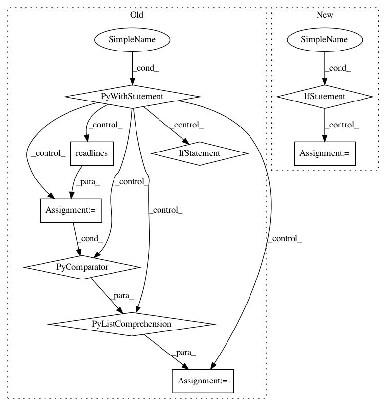

cb7c20f6ad714f0b016a874b2b06a9fbed4e0a59,tensorflow_transform/test_case.py,TransformTestCase,AssertVocabularyContents,#TransformTestCase#Any#Any#,290
Before Change
raise
def AssertVocabularyContents(self, vocab_file_path, file_contents):
with tf.io.gfile.GFile(vocab_file_path, "rb") as f:
file_lines = f.readlines()
// Store frequency case.
if isinstance(file_contents[0], tuple):
word_and_frequency_list = []
for content in file_lines:
frequency, word = content.split(b" ", 1)
// Split by comma for when the vocabulary file stores the result of
// per-key analyzers.
values = list(map(float, frequency.strip(b"\n").split(b",")))
word_and_frequency_list.append(
(word.strip(b"\n"), values[0] if len(values) == 1 else values))
expected_words, expected_frequency = zip(*word_and_frequency_list)
actual_words, actual_frequency = zip(*file_contents)
self.assertAllEqual(expected_words, actual_words)
np.testing.assert_almost_equal(expected_frequency, actual_frequency)
else:
file_lines = [content.strip(b"\n") for content in file_lines]
self.assertAllEqual(file_lines, file_contents)
def WriteRenderedDotFile(self, dot_string, output_file=None):
tf.compat.v1.logging.info(
"Writing a rendered dot file is not yet supported.")
After Change
raise
def AssertVocabularyContents(self, vocab_file_path, file_contents):
if vocab_file_path.endswith(".tfrecord.gz"):
file_lines = list(
tf_utils.read_tfrecord_vocabulary_dataset(
vocab_file_path).as_numpy_iterator())
else:
with tf.io.gfile.GFile(vocab_file_path, "rb") as f:
file_lines = f.read().splitlines()
// Store frequency case.
if isinstance(file_contents[0], tuple):
word_and_frequency_list = []
for content in file_lines:
frequency, word = content.split(b" ", 1)
In pattern: SUPERPATTERN
Frequency: 3
Non-data size: 9
Instances
Project Name: tensorflow/transform
Commit Name: cb7c20f6ad714f0b016a874b2b06a9fbed4e0a59
Time: 2020-07-16
Author: zoy@google.com
File Name: tensorflow_transform/test_case.py
Class Name: TransformTestCase
Method Name: AssertVocabularyContents
Project Name: metalbubble/moments_models
Commit Name: 70e4855f5608c4481dfffd5f762e310d631d06c3
Time: 2020-10-09
Author: mmonfort@mit.edu
File Name: test_model_CAM.py
Class Name:
Method Name:
Project Name: metalbubble/moments_models
Commit Name: 5212f598c3d65670a0399afe0a7434e91a5556aa
Time: 2018-01-15
Author: alexandonian@gmail.com
File Name: test_model.py
Class Name:
Method Name: